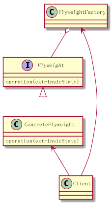
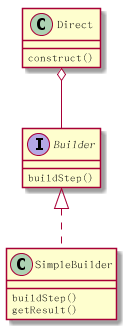
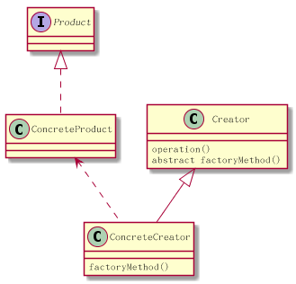
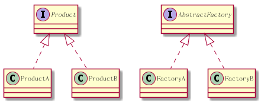
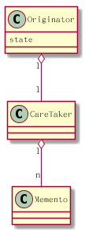
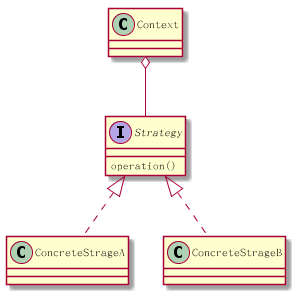
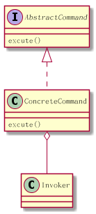
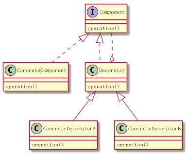
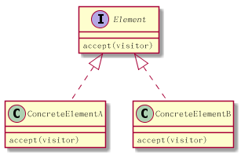
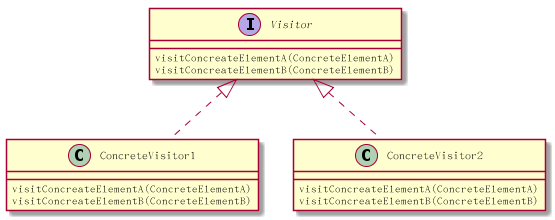

java 设计模式
Table of Contents
- 1. UML 图示及plantuml 语法
- 2. Structural Patterns
- 3. Creational Patterns
- 4. Behavioral Patterns
- 4.1. Observer Pattern观察者模式
- 4.2. Mediator Design Pattern 中介者模式
- 4.3. Chain of Responsibility Pattern责任链模式
- 4.4. Memento[məˈmentoʊ] pattern 备忘录模式
- 4.5. Template Pattern 模板模式
- 4.6. state pattern
- 4.7. Strategy pattern
- 4.8. Command Pattern 命令模式
- 4.9. Interpreter Pattern解释器模式
- 4.10. Decorator Pattern 修饰模式
- 4.11. Iterator pattern 迭代器模式
- 4.12. Visitor 模式
- 5. ref
1 UML 图示及plantuml 语法
1.1 泛化（Generalization） is-a
就是我们熟悉的继承。

plantuml 语法如下。
Animal <|-- Tiger
1.2 实现（Realization）
就是接口的实现

interface IBrush IBrush <|.. PenBrush
1.3 聚合（Aggregation）

Class Car{
}
Class Engine{
}
Class 轮胎{
}
Car "1" o-- "1" Engine
Car "1" o-- "4" 轮胎
"has-a" 关系，依赖关系较弱，一个车 ，少一个轮子，也叫车。 一个List，少一个元素也是List
1.4 组合(Composition)

"contains-a"关系， 依赖关系较强，所以是实心的。
公司 *-- 财务部 公司 *-- 研发部
2 Structural Patterns
记忆方法 FFP ABC Facade Flyweight Proxy Adapter Bridge Composite
2.1 适配器模式 Adapter
将一个类的接口转换成客户希望的另外一个接口。Adapter 模式使得原本由于接口不兼容而不能一起工作的那些类可以一起工作。 其实现方式主要有两种：
- 类的适配器模式（采用继承实现）
- 对象适配器（采用对象组合方式实现）
组合方式的例子
public class XpayToPayDAdapter implements PayD{ private final Xpay xpay; public XpayToPayDAdapter(Xpay xpay){ }
2.2 Facade模式[fəˈsɑːd]外观模式
Facade模式可以用于，封闭复杂子系统， 或者分层系统，
package com.javacodegeeks.patterns.facadepattern; public class ScheduleServerFacade { private final ScheduleServer scheduleServer; public ScheduleServerFacade(ScheduleServer scheduleServer){ this.scheduleServer = scheduleServer; } public void startServer(){ scheduleServer.startBooting(); scheduleServer.readSystemConfigFile(); scheduleServer.init(); scheduleServer.initializeContext(); scheduleServer.initializeListeners(); scheduleServer.createSystemObjects(); } public void stopServer(){ scheduleServer.releaseProcesses(); scheduleServer.destory(); scheduleServer.destroySystemObjects(); scheduleServer.destoryListeners(); scheduleServer.destoryContext(); scheduleServer.shutdown(); } }
此例对外屏蔽scheduleServer的启动停止过程的细节。
2.3 Composite Patten构成模式
觉见的应用就是树，有四个参与者， Client 树的使用者， Component元件（叶和非叶的公共接口），leaf叶子节点， Composite非叶节点 比如，HTML解析这种场景就适合使用构成模式。

2.4 Bridge Pattern
桥接模式，实现上是桥接了两条线， 一条是以Abstract Class为基础的类继承序列，另一条是以Interface 为基础的实现序列。 通过在AbsttractClass中的一个成员变量，使用构成（聚合）的方法，桥接接口序列.

左边一条线：
package com.qianyan.bridge; public abstract class Car { private Engine engine; public Car(Engine engine) { this.engine = engine; } public Engine getEngine() { return engine; } public void setEngine(Engine engine) { this.engine = engine; } public abstract void installEngine(); } public class Bus extends Car { public Bus(Engine engine) { super(engine); } @Override public void installEngine() { System.out.print("Bus:"); this.getEngine().installEngine(); } public class Jeep extends Car { public Jeep(Engine engine) { super(engine); } @Override public void installEngine() { System.out.print("Jeep:"); this.getEngine().installEngine(); }
右边一条线
public interface Engine { /** * 安装发动引擎 */ public void installEngine(); } public class Engine2000 implements Engine { @Override public void installEngine() { System.out.println("安装2000CC发动引擎"); } } public class Engine2200 implements Engine { @Override public void installEngine() { System.out.println("安装2200CC发动引擎"); } }
使用方法
public class MainClass { public static void main(String[] args) { Engine engine2000 = new Engine2000(); Engine engine2200 = new Engine2200(); Car bus = new Bus(engine2000); bus.installEngine(); Car jeep = new Jeep(engine2200); jeep.installEngine(); } }
为了更好的理解 桥接模式的用途，我们来想象一下如果不用桥接，这要怎么实现.

2.5 Proxy Pattern
有很多变种 ，Remote Proxy, Virtual Proxy,and Protection Proxy
为什么需要代理，因为被代理的对象
- may be remote
- expensive to create
- in need of being secured.
2.6 Flyweight Pattern 享元模式
面向对象编程让程序员的生活变得有趣而简单， 编程成了对现实的model化。 但创建和保存太多的对象，会占用系统过多的内存资源。所以好的程序员要学习控制对象的创建。 如果对象相似，比如大多数属性值是一样的，只有少量属性有变化， 就要想办法共享。
有这样一个平台，用户可以选择编辑语言，和运行平台，然后这个平台替你运行并返回结果。
public class Code { private String code; public String getCode() { return code; } public void setCode(String code) { this.code = code; } }
Code是一个轻量型对象。只是代表一段代码。
public interface Platform { public void execute(Code code); } public class JavaPlatform implements Platform { public JavaPlatform(){ System.out.println("JavaPlatform object created"); } @Override public void execute(Code code) { System.out.println("Compiling and executing Java code."); } }
platform系统的对象是重型对象，建立环境还需要很多对象。
Platform platform = new JavaPlatform(); platform.execute(code);
当有2K的用户在线的时候，就要创建2k的Code对象，和2k的Platform对象。
A flyweight is a shared object that can be used in multiple contexts simultaneously.
这所以能够实现y共享，是因为将享元的属性状态分成了两类
- intrinsic state 内在状态 ， 在所有环境下都一样的状态属性
- extrinsic state 外在状态， 环境不同，属性状态不同
intrinsic state 是可以被共享的，extrinsic 是不能共享的。
享元模式的UML图是这样的

FlyweightFactory 是共享对象池，使用map 存储共享对象。 共享对象，通过 向操作 函数传入外在状态属性值来使用对象。
针对我们上面使用的场景， platform 没有内在对象，只有一个外在对象，code, 通过 excute函数可以传入code. 我们来看一下factory的实现
public final class PlatformFactory { private static Map<String, Platform> map = new HashMap<>(); private PlatformFactory(){ throw new AssertionError("Cannot instantiate the class"); } public static synchronized Platform getPlatformInstance(String platformType){ Platform platform = map.get(platformType); if(platform==null){ switch(platformType){ case "C" : platform = new CPlatform(); break; case "CPP" : platform = new CPPPlatform(); break; case "JAVA" : platform = new JavaPlatform(); break; case "RUBY" : platform = new RubyPlatform(); break; } map.put(platformType, platform); } return platform; } }
注意Map本身是不同步的，所以 getPlatforminstance就一定要同步，否则影响对象创建。 使用方法如下。
public class TestFlyweight { public static void main(String[] args) { Code code = new Code(); code.setCode("C Code..."); Platform platform = PlatformFactory.getPlatformInstance("C"); platform.execute(code); System.out.println("*************************"); code = new Code(); code.setCode("C Code2..."); platform = PlatformFactory.getPlatformInstance("C"); platform.execute(code); System.out.println("*************************"); code = new Code(); code.setCode("JAVA Code..."); platform = PlatformFactory.getPlatformInstance("JAVA"); platform.execute(code); System.out.println("*************************"); }}
对就UML图， Platform 就相当于Flyweight接口。 JavaPlatform相当于ConcreteFlyweight. 而excute方法就是operation方法 。
3 Creational Patterns
3.1 单例模式
懒汉式
class Singleton { private static Singleton instance = new Singleton(); private Singleton() { // } public static Singleton getInstance() { return instance; } }
懒汉式的缺点是，类加载时就要实例化了。 而不是第一次调用时实例化。
改进方法如下
public class Singleton { // Private constructor prevents instantiation from other classes private Singleton(){} /** * SingletonHolder is loaded on the first execution of Singleton.getInstance() * or the first access to SingletonHolder.INSTANCE, not before. */ private final static class SingletonHolder { private final static Singleton instance = new Singleton(); } public static Singleton getInstance() { return SingletonHolder.instance; } }
3.2 Builder Pattern
回想一下之前写C++程序的时候， 一个类，有很多成员变量，这些成员变量，有的是字符串，有的整型，有的是其它对象。这些成员变量有的是这个类实例化必要的，有的是可选的。 于是，这个类的构造函数，就搞得很复杂， 需要有很多参数的构造函数，构造流程也很复杂。 Bulder 模式就是为了解决这个问题，它有两种形式。
先看第一种，对于上面所述的问题，以前一般是通过建立Telescoping（可伸缩）的构造函数序列。 比如有一个表单，前四个字段是必须的， 其它都是可选的。
public class Form { private String firstName; private String lastName; private String userName; private String password; private String address; private Date dob; private String email; private String backupEmail; private String spouseName; private String city; private String state; private String country; private String language; private String passwordHint; private String secuirtyQuestion; private String securityAnswer; }
它的构造函数就可以这么写,
public Form(String firstName,String lastName){ this(firstName,lastName,null,null); } public Form(String firstName,String lastName,String userName,String password){ this(firstName,lastName,userName,password,null,null); } public Form(String firstName,String lastName,String userName,String password,String address ←- ,Date dob){ this(firstName,lastName,userName,password,address,dob,null,null); } public Form(String firstName,String lastName,String userName,String password,String address ←- ,Date dob,String email,String backupEmail){ }
这就叫telesoping. 这个存在的问题是什么 ， 是client在用这个类的时间，可读性差， client还要清楚每一个参数的意思、顺序、类型， 一旦出了问题，最差的情况是顺序错了，但类型一样，编译器没报错，运行起来才出问题。
public class Form { private String firstName; private String lastName; private String userName; private String password; private String address; private Date dob; private String email; private String backupEmail; private String spouseName; private String city; private String state; private String country; private String language; private String passwordHint; private String secuirtyQuestion; private String securityAnswer; public static class FormBuilder { private String firstName; private String lastName; private String userName; private String password; private String address; private Date dob; private String email; private String backupEmail; private String spouseName; private String city; private String state; private String country; private String language; private String passwordHint; private String secuirtyQuestion; private String securityAnswer; public FormBuilder(String firstName, String lastName, String userName, String password){ this.firstName = firstName; this.lastName = lastName; this.userName = userName; this.password = password; } public FormBuilder address(String address){ this.address = address; return this; } public FormBuilder dob(Date dob){ this.dob = dob; return this; } public FormBuilder email(String email){ this.email = email; return this; } public FormBuilder backupEmail(String backupEmail){ this.backupEmail = backupEmail; return this; } public FormBuilder spouseName(String spouseName){ this.spouseName = spouseName; return this; } public FormBuilder city(String city){ this.city = city; return this; } public FormBuilder state(String state){ this.state = state; return this; } public FormBuilder country(String country){ this.country = country; return this; } public FormBuilder language(String language){ this.language = language; return this; } public FormBuilder passwordHint(String passwordHint){ this.passwordHint = passwordHint; return this; } public FormBuilder securityQuestion(String securityQuestion){ this.securityQuestion = securityQuestion; return this; } public FormBuilder securityAnswer(String securityAnswer){ this.securityAnswer = securityAnswer; return this; } public Form build(){ return new Form(this); } } private Form(FormBuilder formBuilder){ this.firstName = formBuilder.firstName; this.lastName = formBuilder.lastName; this.userName = formBuilder.userName; this.password = formBuilder.password; this.address = formBuilder.address; this.dob = formBuilder.dob; this.email = formBuilder.email; this.backupEmail = formBuilder.backupEmail; this.spouseName = formBuilder.spouseName; this.city = formBuilder.city; this.state = formBuilder.state; this.country = formBuilder.country; this.language = formBuilder.language; this.passwordHint = formBuilder.passwordHint; this.securityQuestion = formBuilder.securityQuestion; this.securityAnswer = formBuilder.securityAnswer; } @Override public String toString(){ StringBuilder sb = new StringBuilder(); sb.append(" First Name: "); sb.append(firstName); sb.append("\\n Last Name: "); sb.append(lastName); sb.append("\\n User Name: "); sb.append(userName); sb.append("\\n Password: "); sb.append(password); if(this.address!=null){ sb.append("\\n Address: "); sb.append(address); } if(this.dob!=null){ sb.append("\\n DOB: "); sb.append(dob); } if(this.email!=null){ sb.append("\\n Email: "); sb.append(email); } if(this.backupEmail!=null){ sb.append("\\n Backup Email: "); sb.append(backupEmail); } if(this.spouseName!=null){ sb.append("\\n Spouse Name: "); sb.append(spouseName); } if(this.city!=null){ sb.append("\\n City: "); sb.append(city); } if(this.state!=null){ sb.append("\\n State: "); sb.append(state); } if(this.country!=null){ sb.append("\\n Country: "); sb.append(country); } if(this.language!=null){ sb.append("\\n Language: "); sb.append(language); } if(this.passwordHint!=null){ sb.append("\\n Password Hint: "); sb.append(passwordHint); } if(this.securityQuestion!=null){ sb.append("\\n Security Question: "); sb.append(securityQuestion); } if(this.securityAnswer!=null){ sb.append("\\n Security Answer: "); sb.append(securityAnswer); } return sb.toString(); } public static void main(String[] args) { Form form = new Form.FormBuilder("Dave", "Carter", "DavCarter", "DAvCaEr123").passwordHint("MyName").city("NY").language("English").build(); System.out.println(form); } }
这就是第一种构建模式， FormBuilder构造函数参数只是必要的四个，其它通过方法来设计，最后通过build()方法来构建对象。 第一种形式适用于对象依赖很多很复杂的情景。
第二种构建模式的形式，稍复杂一些，适用于构建步骤复杂，但能分得出几步的情况。 比如说，需要为某个汽车渲染引擎提供汽车对象， 对象的构造步骤如下，buildBodyStyle()、buildPower()、buildEngine()、buildBreaks() buildSeats()、buildWindows()等等。 所以你可定义一个Bulder接口定义这些步骤。 对于具体的车比如轿车SedanCar和SportsCar实现 具体Builder。 用户可以直接使用这些Builder，但更好的方法是提供一个Facade模式的对象，替用户实现构建细节。

Direct 就是facade模式，construct方法按顺序调用builder的每个buildStep
public class Car { private String bodyStyle; private String power; private String engine; private String breaks; private String seats; private String windows; private String fuelType; private String carType; public Car (String carType){ this.carType = carType; } public String getBodyStyle() { return bodyStyle; } public void setBodyStyle(String bodyStyle) { this.bodyStyle = bodyStyle; } public String getPower() { return power; } public void setPower(String power) { this.power = power; } public String getEngine() { return engine; } public void setEngine(String engine) { this.engine = engine; } public String getBreaks() { return breaks; } public void setBreaks(String breaks) { this.breaks = breaks; } public String getSeats() { return seats; } public void setSeats(String seats) { this.seats = seats; } public String getWindows() { return windows; } public void setWindows(String windows) { this.windows = windows; } public String getFuelType() { return fuelType; } @Override public String toString(){ StringBuilder sb = new StringBuilder(); sb.append("--------------"+carType+"--------------------- \\n"); sb.append(" Body: "); sb.append(bodyStyle); ... return sb.toString(); } } public interface CarBuilder { public void buildBodyStyle(); public void buildPower(); public void buildEngine(); public void buildBreaks(); public void buildSeats(); public void buildWindows(); public void buildFuelType(); public Car getCar(); } public class SedanCarBuilder implements CarBuilder{ private final Car car = new Car("SEDAN"); @Override public void buildBodyStyle() { car.setBodyStyle("External dimensions: overall length (inches): 202.9, " + "overall width (inches): 76.2, overall height (inches): ←- 60.7, wheelbase (inches): 112.9," + " front track (inches): 65.3, rear track (inches): 65.5 and ←- curb to curb turning circle (feet): 39.5"); } ... @Override public Car getCar(){ return car; } } public class SportsCarBuilder implements CarBuilder{ private final Car car = new Car("SPORTS"); @Override public void buildBodyStyle() { car.setBodyStyle("External dimensions: overall length (inches): 192.3," + " overall width (inches): 75.5, overall height (inches): ←- 54.2, wheelbase (inches): 112.3," + " front track (inches): 63.7, rear track (inches): 64.1 and ←- curb to curb turning circle (feet): 37.7"); } ... @Override public Car getCar(){ return car; } } public class CarDirector { private CarBuilder carBuilder; public CarDirector(CarBuilder carBuilder){ this.carBuilder = carBuilder; } public build(){ this.carBuilder.buildBodyStyle() this.carBuilder.buildPower(); this.carBuilder.buildEngine(); this.carBuilder.buildBreaks(); this.carBuilder.buildSeats(); this.carBuilder.buildWindows(); this.carBuilder.buildFuelType(); } @Override public Car getCar(){ return this.carBuilder.car; } } public class TestBuilderPattern { public static void main(String[] args) { CarBuilder carBuilder = new SedanCarBuilder(); CarDirector director = new CarDirector(carBuilder); director.build(); Car car = carBuilder.getCar(); System.out.println(car); carBuilder = new SportsCarBuilder(); director = new CarDirector(carBuilder); director.build(); car = carBuilder.getCar(); System.out.println(car); } }
构建模式就一句话： 替用户构建对象。 那和工厂模式有什么区别？ 工厂模式是替用户创建对象提供服务。 构建模式是为用户构建对象。 这两种的区别就是，创建的重点在create 也就是new这个动作。 而build表示的是new这个过程，也就是说工厂模式关心的是如果new一个继承树上的每个对象。 构建模式关心的是对一个构建过程复杂的对象，如何为用户屏蔽构建这个细节和过程。
3.3 Factory Method Pattern
就是定义一个创建对象的接口，然后让子类去实现接口，去选择用使用哪个类去实例化， 工厂模式让类的实例化过程推迟到了子类。 其目的是封装concrete具体类型的初始化过程。 工厂方法依据应用的上下文和其它影响因素，从类继承树上，选择合适的类，实例化，初始化后返回。 这能避免client 去处理选择类的问题。

Product 这一侧就是类的继承树。 Creator 的factoryMethod是让子类覆盖的，来选择创建合适的Product。 Creator的operation()方法，是用来调用factoryMethod()创建出Product然后提供一个服务的。
比如说，我们的产品是一套XML解析器，要依据不用的XML文件类型，提供不用的解析器
public interface XMLParser { public String parse(); } public class ErrorXMLParser implements XMLParser{ @Override public String parse() { System.out.println("Parsing error XML..."); return "Error XML Message"; } } public class FeedbackXML implements XMLParser{ @Override public String parse() { System.out.println("Parsing feedback XML..."); return "Feedback XML Message"; } } public class OrderXMLParser implements XMLParser{ @Override public String parse() { System.out.println("Parsing order XML..."); return "Order XML Message"; } } public class ResponseXMLParser implements XMLParser{ @Override public String parse() { System.out.println("Parsing response XML..."); return "Response XML Message"; } }
然后我们提供一个Creator类
public abstract class DisplayService { public void display(){ XMLParser parser = getParser(); String msg = parser.parse(); System.out.println(msg); } protected abstract XMLParser getParser(); }
这个工厂类，提供的工厂方法是getParse(),提供的服务是display(); OK,接下来是各个ConcreteCreator的实现。
public class ErrorXMLDisplayService extends DisplayService{ @Override public XMLParser getParser() { return new ErrorXMLParser(); } } public class FeedbackXMLDisplayService extends DisplayService{ @Override public XMLParser getParser() { return new FeedbackXML(); } } public class OrderXMLDisplayService extends DisplayService{ @Override public XMLParser getParser() { return new OrderXMLParser(); } } public class ResponseXMLDisplayService extends DisplayService{ @Override public XMLParser getParser() { return new ResponseXMLParser(); } }
然后就是使用方法
public class TestFactoryMethodPattern { public static void main(String[] args) { DisplayService service = new FeedbackXMLDisplayService(); service.display(); service = new ErrorXMLDisplayService(); service.display(); service = new OrderXMLDisplayService(); service.display(); service = new ResponseXMLDisplayService(); service.display(); } }
什么情况下使用工厂模式
- 一个class没办法预计到将要创建的w具体是哪一个类
- 想让它的子类去指定创建哪个类
- 一个类负责代理多个helper subclass, 你想本地集中管理
3.4 Abstract Factory Method Design Pattern抽象工厂模式
是工厂模式的下一级，是工厂的工厂。
为什么工厂还需要工厂呢？ 我们看到工厂模式, 是concreteFactory来继承Factory. 这就造成了所有的concreteFactory是平行的。 是不能分组的。
比如XMLParser， 有ErrorXmlParser、MessageXmlParser等等。 假如这个时候， 允许由不同的厂商来定义parser了。 那就会有，ChromeErrorXmlParser AdobeMessageXmlParser等等， 同一个公司的Parser应该有一个factory来创建， 而所有factory的接口就是抽象factory.
when a client object wants to create an instance of one of a suite of related，dependent classes without having to know which specific concrete class is to be instantiated. 用于向系统中插入一组不同的对象来改变系统行为。

其实工厂模式的主要用途就是为了对client屏蔽product关系树的复杂性。用户不必知道具体实例化的是哪一个produce，只需要知道如何使用factory就可以。
product一侧
public interface XMLParser { public String parse(); } public class NYErrorXMLParser implements XMLParser{ @Override public String parse() { System.out.println("NY Parsing error XML..."); return "NY Error XML Message"; } } public class NYFeedbackXMLParser implements XMLParser{ @Override public String parse() { System.out.println("NY Parsing feedback XML..."); return "NY Feedback XML Message"; } } public class NYOrderXMLParser implements XMLParser{ @Override public String parse() { System.out.println("NY Parsing order XML..."); return "NY Order XML Message"; } } public class NYResponseXMLParser implements XMLParser{ @Override public String parse() { System.out.println("NY Parsing response XML..."); return "NY Response XML Message"; } } public class TWErrorXMLParser implements XMLParser{ @Override public String parse() { System.out.println("TW Parsing error XML..."); return "TW Error XML Message"; } } public class TWFeedbackXMLParser implements XMLParser{ @Override public String parse() { System.out.println("TW Parsing feedback XML..."); return "TW Feedback XML Message"; } } public class TWOrderXMLParser implements XMLParser{ @Override public String parse() { System.out.println("TW Parsing order XML..."); return "TW Order XML Message"; } } public class TWResponseXMLParser implements XMLParser{ @Override public String parse() { System.out.println("TW Parsing response XML..."); return "TW Response XML Message"; } }
我们依照这个关系，可以创建两个工厂。
public interface AbstractParserFactory { public XMLParser getParserInstance(String parserType); } public class NYParserFactory implements AbstractParserFactory { @Override public XMLParser getParserInstance(String parserType) { switch(parserType){ case "NYERROR": return new NYErrorXMLParser(); case "NYFEEDBACK": return new NYFeedbackXMLParser (); case "NYORDER": return new NYOrderXMLParser(); case "NYRESPONSE": return new NYResponseXMLParser(); } return null; } } public class TWParserFactory implements AbstractParserFactory { @Override public XMLParser getParserInstance(String parserType) { switch(parserType){ case "TWERROR": return new TWErrorXMLParser(); case "TWFEEDBACK": return new TWFeedbackXMLParser (); case "TWORDER": return new TWOrderXMLParser(); case "TWRESPONSE": return new TWResponseXMLParser(); } return null; } }
可选了，你可以再定义一个类，来向用户屏蔽工厂复杂性。
public final class ParserFactoryProducer { private ParserFactoryProducer(){ throw new AssertionError(); } public static AbstractParserFactory getFactory(String factoryType){ switch(factoryType) { case "NYFactory": return new NYParserFactory(); case "TWFactory": return new TWParserFactory(); } return null; } }
3.5 Prototype Pattern 原型模式
就是对象不直接创建，而通过复制已经创建好的原型对象，来创建。以此来提高性能。 我只觉得这只适用于要创建的对象是几个固定的状态对象时，才适用这种模式。
比如用于的访问权限管理
- "USER"
- "ADMIN" add/remove USERS
- "MANAGER" read/generate reports
- "VP" modify reports
我们假设给你一个control level 比如ADMIN。你要知道他都有什么权限需要查询数据库。 那么每创建一个ADMIN的controllevel 就都需要查询一次数据库， 这显示不如复制已经创建好的ADMIN来的快。
原型模式的实现方式是继承java clonable，重写它的clone()方法。
public interface Prototype extends Cloneable { public AccessControl clone() throws CloneNotSupportedException; } public class AccessControl implements Prototype{ private final String controlLevel; private String access; public AccessControl(String controlLevel,String access){ this.controlLevel = controlLevel; this.access = access; } @Override public AccessControl clone(){ try { return (AccessControl) super.clone(); } catch (CloneNotSupportedException e) { e.printStackTrace(); } return null; } public String getControlLevel(){ return controlLevel; } public String getAccess() { return access; } public void setAccess(String access) { this.access = access; } }
我们看到是调用了super.clone()也就是Cloneable的clone(), 换句话说Cloneable不只是接口还有clone的实现，虽然不知道 是什么实现的。
总之是先super.clone(), 然后再类型转换为AccessControl并返回。
然后我们通过一个工厂先把对象创建好。
public class AccessControlProvider { private static Map<String, AccessControl>map = new HashMap<String, AccessControl>() ←- ; static{ System.out.println("Fetching data from external resources and creating ←- access control objects..."); map.put("USER", new AccessControl("USER","DO_WORK")); map.put("ADMIN", new AccessControl("ADMIN","ADD/REMOVE USERS")); map.put("MANAGER", new AccessControl("MANAGER","GENERATE/READ REPORTS")); map.put("VP", new AccessControl("VP","MODIFY REPORTS")); } public static AccessControl getAccessControlObject(String controlLevel){ AccessControl ac = null; ac = map.get(controlLevel); if(ac!=null){ return ac.clone(); } return null; } }
然后我们就可以这样去使用了
userAccessControl = AccessControlProvider.getAccessControlObject("USER"); user = new User("User B", "USER Level", userAccessControl);
4 Behavioral Patterns
4.1 Observer Pattern观察者模式
观察模式 即发布订阅模式， 从第一理解性上，发布订阅更好更好理解。 发布者就是被观察者， 订阅者就是观察者。
订阅者，订阅观察者以后，就被加入到发布者管理的订阅者数组里， 当发布者想发布事件时，就循环调用数组中订阅者接口。
java.util.Observable 提供了被观察者的实现 java.util.Observer提供了观察者接口。注意这个名字是observ er 不是ob server 观察者，有update(Observable o, Object arg)方法，当被观察者调用 setChanged(); notifyObservers(homework);
notifyObservers函数就是循环调用，observer的update方法。
observable.addObserver observable.deleteObserver 管理观察者数组
被观察者observable又被称为Subjet目标。
4.2 Mediator Design Pattern 中介者模式
比如 一个洗衣机Machine, 需要控制马达Motor的开启，依据用户选的衣服类型设置马达转速，根据衣服类型选择使用洗涤剂或者柔顺剂，依据温度传感器的温度，调整使用热水还是凉水。 这样， 机器 马达 配置内存 洗涤剂或者柔顺 温度传感器 水阀 ， 这些对象之间就要有关联和控制， 如果没有中介者， 程序会相当复杂，偶合度高，部件重用性小。
中介者，就是这些部件的中介， 每一个部件，只需要知道使用哪个中介，和中介都 有哪些操作可以使用， 中介自己去实现调用哪个部件。
4.3 Chain of Responsibility Pattern责任链模式
一组对象按一定顺序被链接在一起， 一个责任(请求)，如果在当前对象中可以被处理，则处理完成后返回结果，如果处理不了，递交给后一个对象来处理。

关键点是 Handler 里有一个指向下一个Handler的指针
4.4 Memento[məˈmentoʊ] pattern 备忘录模式
有些时候我们需要记录对象的状态变化，以便在需要的时候提供给用户undo操作。

Originator原意是创始人。 它就是我们的要操作的对象。 Originator并不是所有的属性和成员变量都需要存储的。 Memento就是相当于Originator的“子对象”，也就是它的成员变量或者状态的 子集。 CareTaker存了所有的备份点，用于undo
public class CareTaker { private final Map<String, Memento>savepointStorage = new HashMap<String, Memento>() ←- ; public void saveMemento(Memento memento,String savepointName){ System.out.println("Saving state..."+savepointName); savepointStorage.put(savepointName, memento); } public Memento getMemento(String savepointName){ System.out.println("Undo at ..."+savepointName); return savepointStorage.get(savepointName); } public void clearSavepoints(){ System.out.println("Clearing all save points..."); savepointStorage.clear(); } } public class Memento { private double x; private double y; public Memento(double x, double y){ this.x = x; this.y = y; } public double getX(){ return x; } public double getY(){ return y; } } public class Originator { private double x; private double y; private String lastUndoSavepoint; CareTaker careTaker; public Originator(double x, double y,CareTaker careTaker){ this.x = x; this.y = y; this.careTaker = careTaker; createSavepoint("INITIAL"); } public double getX(){ return x; } public double getY(){ return y; } public void setX(double x) { this.x = x; } public void setY(double y) { this.y = y; } public void createSavepoint(String savepointName){ careTaker.saveMemento(new Memento(this.x, this.y), savepointName); lastUndoSavepoint = savepointName; } public void undo(){ setOriginatorState(lastUndoSavepoint); } public void undo(String savepointName){ setOriginatorState(savepointName); } public void undoAll(){ setOriginatorState("INITIAL"); careTaker.clearSavepoints(); } private void setOriginatorState(String savepointName){ Memento mem = careTaker.getMemento(savepointName); this.x = mem.getX(); this.y = mem.getY(); } @Override public String toString(){ return "X: "+x+", Y: "+y; } }
4.5 Template Pattern 模板模式
比如说每种数据库driver的连接步骤基本是一样的，只不过不同的driver每一步的算法是不一样的。 这是就可以使用模板模式。
public abstract class ConnectionTemplate { public final void run() { setDBDriver(); setCredentials(); connect(); prepareStatement(); setData(); insert(); close(); destroy(); } public abstract void setDBDriver(); public abstract void setCredentials(); public void connect() { System.out.println("Setting connection..."); } public void prepareStatement() { System.out.println("Preparing insert statement..."); } public abstract void setData(); public void insert() { System.out.println("Inserting data..."); } public void close() { System.out.println("Closing connections..."); } public void destroy() { System.out.println("Destroying connection objects..."); } } public class MySqLCSVCon extends ConnectionTemplate { @Override public void setDBDriver() { System.out.println("Setting MySQL DB drivers..."); } @Override public void setCredentials() { System.out.println("Setting credentials for MySQL DB..."); } @Override public void setData() { System.out.println("Setting up data from csv file...."); } } public class OracleTxtCon extends ConnectionTemplate { @Override public void setDBDriver() { System.out.println("Setting Oracle DB drivers..."); }@Override public void setCredentials() { System.out.println("Setting credentials for Oracle DB..."); } @Override public void setData() { System.out.println("Setting up data from txt file...."); } } public class TestTemplatePattern { public static void main(String[] args) { System.out.println("For MYSQL...."); ConnectionTemplate template = new MySqLCSVCon(); template.run(); System.out.println("For Oracle..."); template = new OracleTxtCon(); template.run(); } }
4.6 state pattern
有这样一个应用场景，一个做饭机器人，有三种状态，开启状态、关闭状态、cook状态。机器人有三个行为 walk 、cook、switch off. 首先要理解的是状态模式中的状态和行为。 三种状态，每种状态下都可以进行walk 、cook、 switch off.三种操作，只不过操作的执行效果不一样。
cook状态下的switch off操作是无效。 off状态下执行walk会自动进入开启状态，off状态下cook操作无效等等。
先定义状态接口
public interface RoboticState { public void walk(); public void cook(); public void off(); }
然后定义状态
public class RoboticOn implements RoboticState{ private final Robot robot; public RoboticOn(Robot robot){ this.robot = robot; } @Override public void walk() { System.out.println("Walking..."); } @Override public void cook() { System.out.println("Cooking..."); robot.setRoboticState(robot.getRoboticCook()); } @Override public void off() { robot.setState(robot.getRoboticOff()); System.out.println("Robot is switched off"); } } public class RoboticCook implements RoboticState{ private final Robot robot; public RoboticCook(Robot robot){ this.robot = robot; } @Override public void walk() { System.out.println("Walking..."); robot.setRoboticState(robot.getRoboticOn()); } @Override public void cook() { System.out.println("Cooking..."); } @Override public void off() { System.out.println("Cannot switched off while cooking..."); } } public class RoboticOff implements RoboticState{ private final Robot robot; public RoboticOff(Robot robot){ this.robot = robot; } @Override public void walk() { System.out.println("Walking..."); robot.setRoboticState(robot.getRoboticOn()); } @Override public void cook() { System.out.println("Cannot cook at Off state."); } @Override public void off() { System.out.println("Already switched off..."); } }
接下来我们来定义使用这些状态的对象，也就是机器人对象，在state模式中称为Context.
首先在State定义中，我们看到每个状态都绑定了Context对象Robot. 这是因为，切换状态的是Context而不是State.另外， 要切换成什么状态，那个状态对象需要通过Context对象来获得。
所以Context对象，首先要实现的是存有所有状态对象，好方法在State对象获取其它状态并切换。
其次，我们说所有的tState可以进行那三种操作，实际上这种说法是不现实逻辑的，实际上能进行那三种操作的是Robot本身，而 不是State。 所以 Robot本身也要继承RoboticState
public class Robot implements RoboticState{ private RoboticState roboticOn; private RoboticState roboticCook; private RoboticState roboticOff; private RoboticState state; public Robot(){ this.roboticOn = new RoboticOn(this); this.roboticCook = new RoboticCook(this); this.roboticOff = new RoboticOff(this); this.state = roboticOn; } public void setRoboticState(RoboticState state){ this.state = state; } @Override public void walk() { state.walk(); } @Override public void cook() { state.cook(); } @Override public void off() { state.off(); } public RoboticState getRoboticOn() { return roboticOn; } public void setRoboticOn(RoboticState roboticOn) { this.roboticOn = roboticOn; } public RoboticState getRoboticCook() { return roboticCook; } public void setRoboticCook(RoboticState roboticCook) { this.roboticCook = roboticCook; } public RoboticState getRoboticOff() { return roboticOff; } public void setRoboticOff(RoboticState roboticOff) {this.roboticOff = roboticOff; } public RoboticState getState() { return state; } public void setState(RoboticState state) { this.state = state; } }
使用代码是这样的
public class TestStatePattern { public static void main(String[] args) { Robot robot = new Robot(); robot.walk(); robot.cook(); robot.walk(); robot.off(); robot.walk(); robot.off(); robot.cook(); } }
4.7 Strategy pattern
最简单的设计模式，但很有用。几乎到处被用，甚至与其它模式结合。所以这个模式非常重要。 首先来看一下什么是statege模式。

比如说一个场景，Text Editor 的格式功能 先定义Strategy接口和几个实现
public interface TextFormatter { public void format(String text); } public class CapTextFormatter implements TextFormatter{ @Override public void format(String text) { System.out.println("[CapTextFormatter]: "+text.toUpperCase()); } } public class LowerTextFormatter implements TextFormatter{ @Override public void format(String text) { System.out.println("[LowerTextFormatter]: "+text.toLowerCase()); } }
然后定义Context
public class TextEditor { private final TextFormatter textFormatter; public TextEditor(TextFormatter textFormatter){ this.textFormatter = textFormatter; } public void publishText(String text){ textFormatter.format(text); } }
使用
public class TestStrategyPattern { public static void main(String[] args) { TextFormatter formatter = new CapTextFormatter(); TextEditor editor = new TextEditor(formatter); editor.publishText("Testing text in caps formatter"); formatter = new LowerTextFormatter(); editor = new TextEditor(formatter); editor.publishText("Testing text in lower formatter"); } }
4.8 Command Pattern 命令模式
helps to decouples the invoker from the receiver of a request.
 Invoker是对各种命令的实现调用执行者。
比如有各种各样的任务需要提交和处理。
AbstractCommand
public interface Job { public void run(); }
Invoker
public class Email { public void sendEmail(){ System.out.println("Sending email......."); } } public class FileIO { public void execute(){ System.out.println("Executing File IO operations..."); } } public class Logging { public void log(){ System.out.println("Logging..."); } } public class Sms { public void sendSms(){ System.out.println("Sending SMS..."); } }
ConcreteCommand
public class EmailJob implements Job{ private Email email; public void setEmail(Email email){ this.email = email; } @Override public void run() { System.out.println("Job ID: "+Thread.currentThread().getId()+" executing email jobs."); if(email!=null){ email.sendEmail(); } try { Thread.sleep(1000); } catch (InterruptedException e) { Thread.currentThread().interrupt(); } } } public class FileIOJob implements Job{ private FileIO fileIO; public void setFileIO(FileIO fileIO){ this.fileIO = fileIO; } @Override public void run() { System.out.println("Job ID: "+Thread.currentThread().getId()+" executing fileIO jobs."); if(fileIO!=null){ fileIO.execute(); } ←- try { Thread.sleep(1000); } catch (InterruptedException e) { Thread.currentThread().interrupt(); } } } public class LoggingJob implements Job{ private Logging logging; public void setLogging(Logging logging){ this.logging = logging; } @Override public void run() { System.out.println("Job ID: "+Thread.currentThread().getId()+" executing logging jobs."); if(logging!=null){ logging.log(); } try { Thread.sleep(1000); } catch (InterruptedException e) { Thread.currentThread().interrupt(); } } } public class SmsJob implements Job{ private Sms sms; public void setSms(Sms sms) { this.sms = sms; } @Override public void run() { System.out.println("Job ID: "+Thread.currentThread().getId()+" executing sms jobs."); if(sms!=null){ sms.sendSms(); } ←- try { Thread.sleep(1000); } catch (InterruptedException e) { Thread.currentThread().interrupt(); } } }
这样做的好处就是client不用知道每个任务的具体实现。 然后这些任务又可以通过 Job接口放到队列里。 这时就可以做一个线程池来排除处理所有的任务了。
public class ThreadPool { private final BlockingQueue<Job> jobQueue; private final Thread[] jobThreads; private volatile boolean shutdown; public ThreadPool(int n) { jobQueue = new LinkedBlockingQueue<>(); jobThreads = new Thread[n]; for (int i = 0; i < n; i++) { jobThreads[i] = new Worker("Pool Thread " + i); jobThreads[i].start(); } } public void addJob(Job r) { try { jobQueue.put(r); } catch (InterruptedException e) { Thread.currentThread().interrupt(); } } public void shutdownPool() { while (!jobQueue.isEmpty()) { try { Thread.sleep(1000); } catch (InterruptedException e) { e.printStackTrace(); } } shutdown = true; for (Thread workerThread : jobThreads) { workerThread.interrupt(); } } private class Worker extends Thread { public Worker(String name) { super(name); } public void run() { while (!shutdown) { try { Job r = jobQueue.take(); r.run(); } catch (InterruptedException e) { } } } } }
BlockingQueue是一个并发队列。 当take()就是等待，直到队内有元素。利益于command模式，通过Job接口，我们可以把任务放在队列里的。
发起任务，只需要调用addJob向队列里提交任务就可以。 来看一下使用的代码
public class TestCommandPattern { public static void main(String[] args) { init(); } private static void init() { ThreadPool pool = new ThreadPool(10); Email email = null; EmailJob emailJob = new EmailJob(); Sms sms = null; SmsJob smsJob = new SmsJob(); FileIO fileIO = null;; FileIOJob fileIOJob = new FileIOJob(); Logging logging = null; LoggingJob logJob = new LoggingJob(); for (int i = 0; i < 5; i++) { email = new Email(); emailJob.setEmail(email); sms = new Sms(); smsJob.setSms(sms); fileIO = new FileIO(); fileIOJob.setFileIO(fileIO); logging = new Logging(); logJob.setLogging(logging); pool.addJob(emailJob); pool.addJob(smsJob); pool.addJob(fileIOJob); pool.addJob(logJob); } pool.shutdownPool(); } }
4.9 Interpreter Pattern解释器模式
先不看这个模式了，这就是给其它语言写解释器用的， 用的频率不高
4.10 Decorator Pattern 修饰模式

看起来有点像桥接模式。但区别是这些东西都是Compoent. "装饰、修饰"的意思是添加东西、添加功能的意思。 比如说，我们素pizza和肉pizza. 但是用户可以再这两种pizza上添加topping(配料)， 比如Broccoli西兰花、奶酪、鸡肉等等。 这时我们主要是要对不同的pizza给出描述和价格。 首先我们定义pizza接口和两种pizza类型
public interface Pizza { public String getDesc(); public double getPrice(); }public class SimplyVegPizza implements Pizza{ @Override public String getDesc() { return "SimplyVegPizza (230)"; } @Override public double getPrice() { return 230; } } public class SimplyNonVegPizza implements Pizza{ @Override public String getDesc() { return "SimplyNonVegPizza (350)"; } @Override public double getPrice() { return 350; } }
然后定义Decarator和加各种配料的pizza
public abstract class PizzaDecorator implements Pizza { @Override public String getDesc() { return "Toppings"; } } public class Broccoli extends PizzaDecorator{ private final Pizza pizza; public Broccoli(Pizza pizza){ this.pizza = pizza; } @Override public String getDesc() { return pizza.getDesc()+", Broccoli (9.25)"; } @Override public double getPrice() { return pizza.getPrice()+9.25; } } public class Cheese extends PizzaDecorator{ private final Pizza pizza; public Cheese(Pizza pizza){ this.pizza = pizza; } @Override public String getDesc() { return pizza.getDesc()+", Cheese (20.72)"; } @Override public double getPrice() { return pizza.getPrice()+20.72; } } public class Chicken extends PizzaDecorator{ private final Pizza pizza; public Chicken(Pizza pizza){ this.pizza = pizza; } @Override public String getDesc() { return pizza.getDesc()+", Chicken (12.75)"; } @Override public double getPrice() { return pizza.getPrice()+12.75; } } // 菲达奶酪 public class FetaCheese extends PizzaDecorator{ private final Pizza pizza; public FetaCheese(Pizza pizza){ this.pizza = pizza; } @Override public String getDesc() { return pizza.getDesc()+", Feta Cheese (25.88)"; } @Override public double getPrice() { return pizza.getPrice()+25.88; } }
然后是使用
public class TestDecoratorPattern { public static void main(String[] args) { DecimalFormat dformat = new DecimalFormat("#.##"); pizza = new SimplyNonVegPizza(); pizza = new Cheese(pizza); System.out.println("Desc: "+pizza.getDesc()); System.out.println("Price: "+dformat.format(pizza.getPrice())); }
其实就是说，当我们想在一个继承树上的对象添加东西又不想影响原来的继承关系的时候可以使用decorator模式。
4.11 Iterator pattern 迭代器模式
对于聚合类型，比如List ，不想通过扩大List的接口，来实现不同的遍历方式。 迭代器模式帮你把遍历这个功能脱离出聚合类型本身。
我们先定义聚合类型存储的元素类型
public class Shape { private int id; private String name; public Shape(int id, String name){ this.id = id; this.name = name; } public int getId() { return id; } public void setId(int id) { this.id = id; } public String getName() { return name; } public void setName(String name) { this.name = name; } @Override public String toString(){ return "ID: "+id+" Shape: "+name; } }
然后定义容器
public class ShapeStorage { private Shape []shapes = new Shape[5]; private int index; public void addShape(String name){ int i = index++; shapes[i] = new Shape(i,name); } public Shape[] getShapes(){ return shapes; } }
最后是迭代器
public class ShapeIterator implements Iterator<Shape>{ private Shape [] shapes; int pos; public ShapeIterator(Shape []shapes){ this.shapes = shapes; } @Override public boolean hasNext() { if(pos >= shapes.length || shapes[pos] == null) return false; return true; } @Override public Shape next() { return shapes[pos++]; } @Override public void remove() { if(pos <=0 ) throw new IllegalStateException("Illegal position"); if(shapes[pos-1] !=null){ for (int i= pos-1; i<(shapes.length-1);i++){ shapes[i] = shapes[i+1]; } shapes[shapes.length-1] = null; } } }
使用方法
public static void main(String[] args) { ShapeStorage storage = new ShapeStorage(); storage.addShape("Polygon"); storage.addShape("Hexagon"); storage.addShape("Circle"); storage.addShape("Rectangle"); storage.addShape("Square"); ShapeIterator iterator = new ShapeIterator(storage.getShapes()); while(iterator.hasNext()){ System.out.println(iterator.next()); } System.out.println("Apply removing while iterating..."); iterator = new ShapeIterator(storage.getShapes()); while(iterator.hasNext()){ System.out.println(iterator.next()); iterator.remove(); } }
4.12 Visitor 模式
还记得讲构成模式的时候，我们的用例是html tag的分析吗？ 现在有新的需求， 添加样式。 你可以每一个composite的addTag方法添加html tag时，加上 "style=" ,但你知道这是个空难。于是，你想到了 在compositer接口里，加一个addClass方法，为tag添加class. 但这有两个缺点， 如果有太多的child class, 我们要为每 一个class实现addClass方法。 二、如果有另的操作需要添加比如添加属性，那就要做同样的事情，费时。
访问者模式，就是为了在不改变原classes基础上实现对元素的操作。
首先给原有的顶层对象加个接口

通过accept方法接收visitor对象。
Visitor 这一侧

先看element 一侧
public interface Element { public void accept(Visitor visitor); } public abstract class HtmlTag implements Element{ public abstract String getTagName(); public abstract void setStartTag(String tag); public abstract String getStartTag(); public abstract String getEndTag(); public abstract void setEndTag(String tag); void setTagBody(String tagBody){ throw new UnsupportedOperationException("Current operation is not support for this object"); } public void addChildTag(HtmlTag htmlTag){ throw new UnsupportedOperationException("Current operation is not support for this object"); } public void removeChildTag(HtmlTag htmlTag){ throw new UnsupportedOperationException("Current operation is not support for this object"); } public List<HtmlTag>getChildren(){ throw new UnsupportedOperationException("Current operation is not support for this object"); } public abstract void generateHtml(); } public class HtmlParentElement extends HtmlTag { private String tagName; private String startTag; private String endTag; List<HtmlTag>childrenTag; public HtmlParentElement(String tagName){ this.tagName = tagName; this.startTag = ""; this.endTag = ""; this.childrenTag = new ArrayList<>(); } @Override public String getTagName() { return tagName; } @Override public void setStartTag(String tag) { this.startTag = tag; } @Override public void setEndTag(String tag) { this.endTag = tag; } @Override public String getStartTag() { return startTag; } @Override public String getEndTag() { return endTag; } @Override public void addChildTag(HtmlTag htmlTag){ childrenTag.add(htmlTag); } @Override public void removeChildTag(HtmlTag htmlTag){ childrenTag.remove(htmlTag); } @Override public List<HtmlTag>getChildren(){ return childrenTag; } @Override public void generateHtml() { System.out.println(startTag); for(HtmlTag tag : childrenTag){ tag.generateHtml(); } System.out.println(endTag); } @Override public void accept(Visitor visitor) { visitor.visit(this); } }
再看visitor
public interface Visitor { public void visit(HtmlElement element); public void visit(HtmlParentElement parentElement); } public class CssClassVisitor implements Visitor{ @Override public void visit(HtmlElement element) { element.setStartTag(element.getStartTag().replace(">", " class=’visitor’>") ←- ); } @Override public void visit(HtmlParentElement parentElement) { parentElement.setStartTag(parentElement.getStartTag().replace(">", " class ←- =’visitor’>")); } } public class StyleVisitor implements Visitor { @Override public void visit(HtmlElement element) { element.setStartTag(element.getStartTag().replace(">", " style=’width:46px ←- ;’>")); } @Override public void visit(HtmlParentElement parentElement) { parentElement.setStartTag(parentElement.getStartTag().replace(">", " style ←- =’width:58px;’>")); } }
使用
Visitor cssClass = new CssClassVisitor(); Visitor style = new StyleVisitor(); parentTag = new HtmlParentElement("<html>"); parentTag.setStartTag("<html>"); parentTag.setEndTag("</html>"); parentTag.accept(style); parentTag.accept(cssClass);